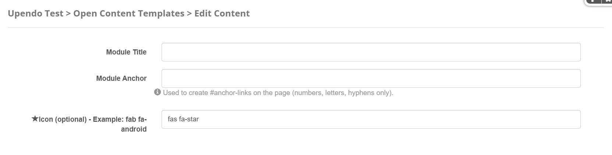

Porto-Dividers Documentation
Overview
The Porto-Dividers component allows you to create visually appealing dividers for your layout. It supports customizable styles, icons, animations, and spacements to match your design needs.
For more details, check out the Porto-Dividers repository on GitHub or the Porto documentation.
Usage Example
Edit
Properties
| Property | Data Type | Description | Example |
|---|---|---|---|
| Module Title | String | Used to define the title of the module. This title is displayed in the DNN administration interface to help identify the module. | |
| Module Anchor | String | Used to create anchor links on the page. This allows users to link directly to the module using a unique identifier. Only letters, numbers, and hyphens are allowed. | |
| Icon | String | Defines the icon to be displayed in the divider. This property is optional. | fab fa-android |
Settings


Settings Properties
| Divider Type | Configuration | Description |
|---|---|---|
| Classic | Spacements | Defines the spacing around the divider. Options include:
|
| Pattern Style | Defines the pattern style of the divider. Options include:
|
|
| Divider with Icon | Icons Sizes | Defines the size of the icon in the divider. Options include:
|
| Icons Position | Defines the position of the icon in the divider. Options include:
|
|
| Divider Full Width | Defines whether the divider spans the full width of the container. Options:
|
|
| Spacements | Defines the spacing around the divider. Options include:
|
|
| Pattern Style | Defines the pattern style of the divider. Options include:
|
|
| Color | Defines the color theme of the divider. These colors are aligned with the Porto theme and can be used to match
the
divider with the overall design. Options include:
|
|
| Divider Style | Defines additional styles for the divider. Options include:
|
|
| Enable Animations | Enables animations for the divider. Options:
|
|
| Small | Small Divider Location | Defines the location of the small divider. Options include:
|
| Small Divider Size | Defines the size of the small divider. Options include:
|
|
| Spacements | Defines the spacing around the divider. Options include:
|
|
| Color | Defines the color theme of the divider. These colors are aligned with the Porto theme and can be used to match the
divider with the overall design. Options include:
|
Views
Below are examples of the different styles and configurations available for the Porto-Dividers component. Each style is customizable and can be adapted to your design needs.
Default: A standard divider layout with no additional features.
Spacements: Dividers with customizable spacing options:
Short, Tall, and Taller.
Styles: Dividers with different pattern styles, such as
Solid, Dashed, Pattern, and Pattern 2.
Full Width: Dividers that span the full width of the container for a seamless layout.
Icons: Dividers with icons for added emphasis. Icons can be positioned
Center, Left, or Right.
Sizes: Dividers available in different sizes, such as
Small, Classic, and Large.
Icon Positions: Dividers with icons positioned Center,
Left, or Right.
Icon Sizes: Dividers with icons available in different sizes:
Small, Normal, and Large.
Colors: Dividers with customizable color themes, such as
Primary, Secondary, Tertiary, and Quaternary.
For more details, check out the Porto examples.